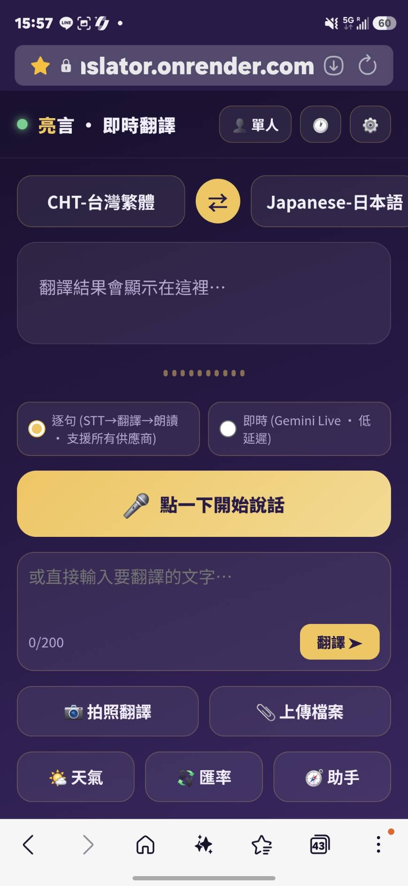

CH00 · 課程總覽與成品展示
曾慶良 主任（阿亮老師），新興科技推廣中心主任、教育部學科中心研究教師、臺北市資訊教育輔導員。
擁有教育部人工智慧講師認證，曾獲百大資訊人才獎、親子天下創新 100 教師、臺北市特殊優良教師。長年在第一線把最新的 AI 工具，變成一般人也能上手的教學。
打開 App，你會看到一個深紫金色的翻譯介面：上方選語言，中間是大大的翻譯結果，下方一顆麥克風按鈕。
對著手機講話，它會即時把你說的話翻成對方的語言，並用語音念出來。

低延遲語音對話翻譯
手機平放，兩人對看
菜單看板，摘要＋翻譯
圖片／PDF／文字檔
即時匯率，免金鑰
要不要帶傘一目了然
上網查最新旅遊資訊
PWA 加到主畫面
按下「📷 拍照翻譯」，手機會直接開相機。對著日文菜單、韓文看板、外文文件拍一張。
AI 會先幫你「看懂」照片內容，用中文摘要重點，再附上完整翻譯。看不懂的東西瞬間變清楚。
背後用的是 Gemini 的「多模態」能力：它能同時理解圖片與文字。
「沖繩 12 月適合玩水嗎？」「那霸機場到國際通怎麼去？」——打進「🧭 助手」。
它會先上網搜尋最新資訊（用 Tavily 搜尋服務），再整理成清楚的答案，還附上參考來源連結。
沒有金鑰也能用——它會自動退回用 AI 既有知識回答，不會壞掉。
Vibe Coding（氛圍編程）是近年因 AI 崛起而流行的做法：你不用自己一行一行寫程式，而是用自然語言描述你想要什麼，讓 AI 幫你把程式碼寫出來。
你的工作從「背語法、記指令」，變成「把需求講清楚、看結果、再調整」。就像跟一位很厲害的工程師夥伴合作，你負責出點子與方向，它負責動手。
目標、輸入、輸出、限制講明白。含糊的需求會得到含糊的結果。
一次只做一個功能，做好了再加下一個，不要一次要一大包。
跑跑看、哪裡不對就告訴 AI，讓它改。對話式地把東西磨好。
這堂課不是講完理論才動手。每一章結束，你都會得到一個「可以使用的小成品」——先能翻譯文字，再加語音，再加拍照…功能一層一層疊上去，每一層都能實際打開來玩。
每章結尾都有這個綠色框，告訴你「現在你的 App 已經能做什麼了」。到課程最後，這些小成品就疊成一個完整的【亮言即時翻譯】App。
比方說，要生出網站骨架，你會用到類似這樣的提示詞：
請用 Python Flask 幫我建立一個最小的網站專案，包含： 1. app.py：啟動一個網頁伺服器，首頁回傳「Hello 亮言」。 2. requirements.txt：列出需要的套件。 3. 告訴我如何在本機執行、用瀏覽器打開看結果。 請一步一步說明，我完全沒有寫過程式。
看到重點了嗎？講清楚要什麼、列出輸出、說明我的程度——這就是好提示詞。
後端（伺服器）的語言與框架，負責處理翻譯、天氣等請求。
前端（畫面），使用者在手機上看到、按到的東西。
負責翻譯、看照片、朗讀、即時語音的 AI 大腦。
讓網頁能「安裝」到手機、支援離線的技術。
| 服務 | 做什麼 | 費用 |
|---|---|---|
| Google AI Studio（Gemini） | 翻譯、拍照、朗讀、即時語音的 AI | 免費額度 |
| Tavily | 旅遊助手上網查資料 | 免費額度 |
| Open-Meteo / ER-API | 天氣、匯率 | 免費・免金鑰 |
| GitHub | 存放程式碼的雲端倉庫 | 免費 |
| Render | 讓網站 24 小時上線的平台 | 免費方案 |
課前準備：認識課程、裝環境、申請金鑰（CH00–02）
Vibe Coding 與骨架：心法 + 前後端骨架（CH03–05）
核心翻譯：文字、語音、即時、面對面（CH06–10）
多模態與旅遊工具：拍照、檔案、匯率、天氣、助手（CH11–15）
上線與加值：PWA、金鑰設定、部署 Render（CH16–18）
整合生成器：填表產出整包專案（CH19）
Windows 或 Mac 都可以。
用來申請各種服務帳號。
測試 App、裝到主畫面。
願意動手、卡關不放棄。
下載工具、呼叫 AI 都要連網。
可分段學習，一個 Part 一個段落。
這堂課刻意選用「免費」或「免費額度」的服務：
API 金鑰就像你家鑰匙——拿到的人可以用你的額度、你的帳單。所以：
雙向即時語音翻譯/
├─ app.py 後端主程式（Flask）
├─ providers.py 翻譯供應商抽象層
├─ requirements.txt 需要的套件清單
├─ .env 你的金鑰（不上傳）
├─ render.yaml 部署設定
├─ templates/
│ └─ index.html 前端頁面
└─ static/
├─ js/app.js 前端邏輯
├─ css/style.css 樣式
├─ sw.js Service Worker（PWA）
└─ manifest.json PWA 設定
| 篇 | Part | 章節 |
|---|---|---|
| 第一篇 · 起步 | Part 0 課前準備 | CH00–02 |
| 第一篇 · 起步 | Part 1 Vibe Coding 與骨架 | CH03–05 |
| 第二篇 · 核心功能 | Part 2 核心翻譯 | CH06–10 |
| 第二篇 · 核心功能 | Part 3 多模態與旅遊工具 | CH11–15 |
| 第三篇 · 上線與擴充 | Part 4 上線與加值 | CH16–18 |
| 第三篇 · 上線與擴充 | Part 5 整合生成器 | CH19 |
Q：我完全沒學過程式，跟得上嗎？
A：跟得上。這堂課就是為零基礎設計的，每一步都有提示詞和截圖。
Q：一定要用哪個 AI？
A：Claude、ChatGPT 等都可以，提示詞通用。
Q：Mac 還是 Windows？
A：都可以，差異的地方課程會特別標註。
Q：做出來的東西是我的嗎？
A：是你親手做的專案，課程素材版權屬阿亮老師、供學員學習。
接下來我們捲起袖子，把電腦環境準備好：安裝 Python、裝好編輯器與 AI 助手，確認一切就緒，準備開始 Vibe Coding。
新興科技推廣中心主任・教育部學科中心研究教師・臺北市資訊教育輔導員
教育部人工智慧講師認證・百大資訊人才獎・親子天下創新 100 教師
▶ YouTube：@Liang-yt02 f 社團：3A 科技研究社 ✉ 3a01chatgpt@gmail.com
本課程與專案僅供「阿亮老師課程學員」學習使用。
❌ 禁止修改 ❌ 禁止轉傳散布 ❌ 禁止商業使用 ❌ 禁止未經授權之任何形式使用